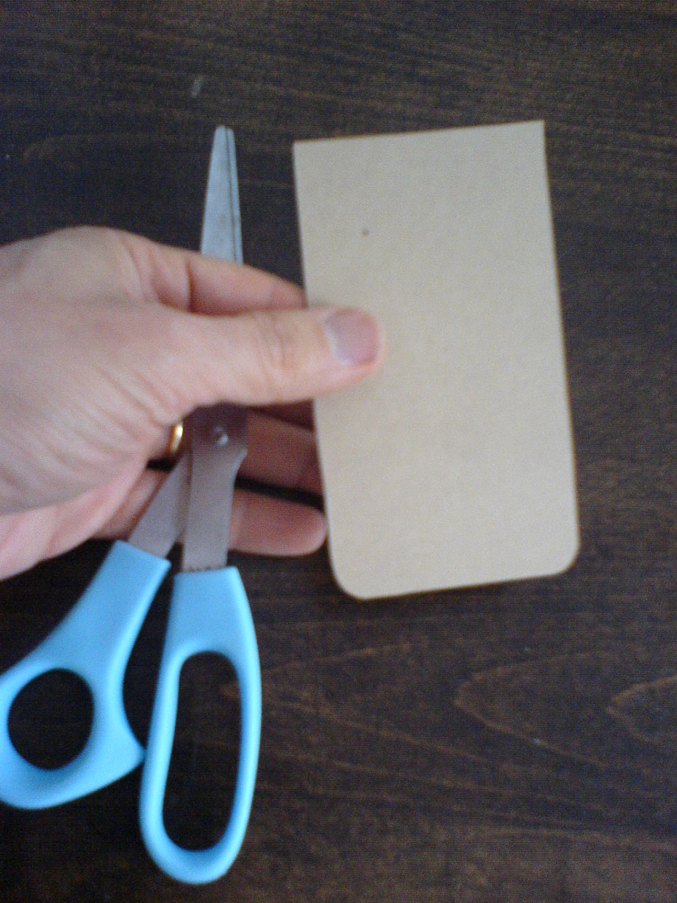
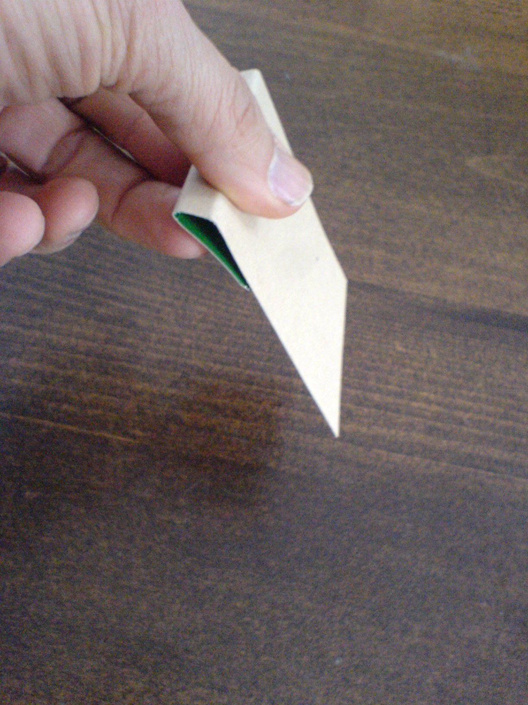
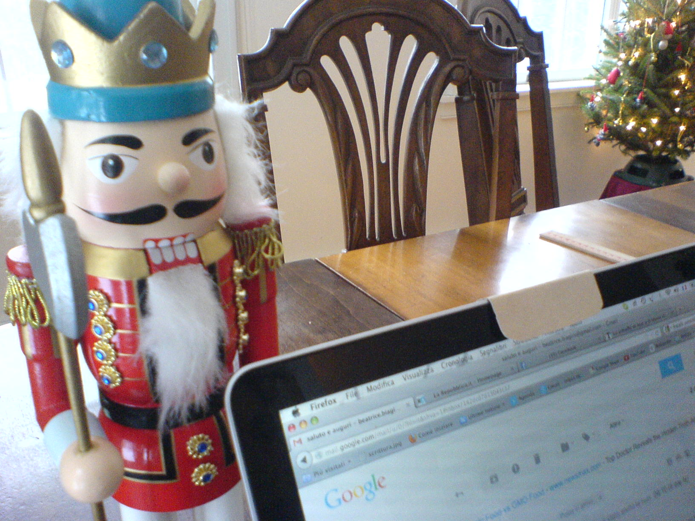

Some of the warnings that accompany viruses’ descriptions and critical updates of software include the scary sentence:
someone can gain total control over your computer
One intriguing possibility is that a malignant trojan, or a hacker, or spying agencies, seizes the operation of the webcam in your computer. Sure enough, in a «soft» surveillance mode, an eavesdropper could just take notice of your traffic or record your written exchanges. But opening an eye into your living room is a totally different matter.
Fortunately, you need not be conversant with code in order to block or at least limit this possibility. You can simply provide your computer with an eyelid. We offer some visuals that indicate how to proceed. You only need a piece of cardboard and scissors. The Mangrovia Collective Eyelid is totally safe and environment friendly. In this version, it is cut out a piece of recycled light cardboard. The total time for the assembling operation is less than one minute.
   Mangrovia Collective Eyelid Privacy ProtectorYou can decorate the Mangrovia Eyelid as you please (for instance, with the logo of your company). We recommend drawing an eye on it, so as to remind you of its use. You should remember to remove the Eyelid if you want to videocall someone. At that point, the Eyelid cannot guarantee your privacy, of course.
The Mangrovia Collective Eyelid invites a playful conversation on the relative merits of low- and hi-tech. Some extremely hi-tech dynamics, such as the possibility of aggressively violating one’s privacy, can be easily defused with a pinch of common sense. At the same time, not everything comes so handy. Your computer does not only have an eye, it has ears too. And it is most likely to be geo-localized. The informational structure allowing visual perception is modulated by the use of the Eyelid, but it is much harder to figure out how to modulate the activity of microphones and GPS antennae.
The Mangrovia Collective Eyelid is licensed with CC 0